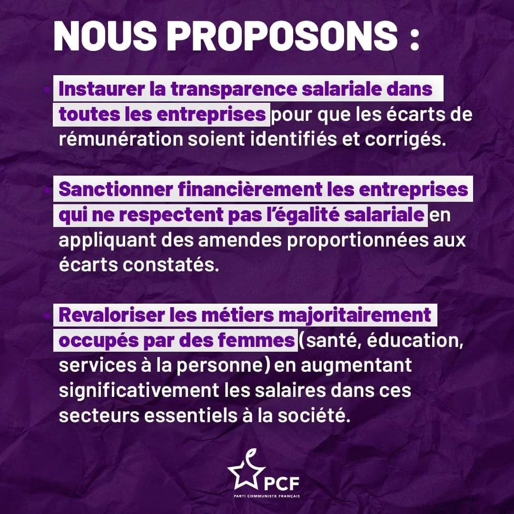

Prise de position relayée
Égalité salariale. Les propositions du PCF du 18 septembre 2024
Date de mise à jour indiquée par Facebook · 18 septembre 2024
Repères éditoriaux
Nous avons relayé les propositions du PCF pour faire respecter l’égalité salariale. Le carrousel détaille la transparence des rémunérations, les sanctions financières et la revalorisation des métiers majoritairement féminins. Le périmètre du chiffre avancé dans l’original reste à documenter.
Texte de la publication · PCF national
Inacceptable !
À compétences égales, les femmes gagnent 18% de moins que les hommes
Aujourd'hui 18 septembre : Journée internationale pour l'égalité salariale

Sources
PCF national · publication relayée par le PCF 79 · bibliothèque Facebook · AR-0002-FB-01293
À lire aussi · 8 mars à Niort, le communiqué de la CGT, de la FSU et de Solidaires